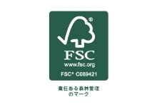
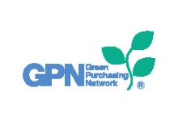
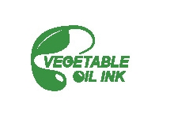
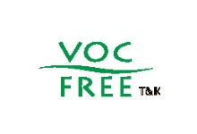

環境への取り組み
ENVIRONMENTAL INITIATIVES
環境理念
当社は、地球環境問題への取り組みが企業経営における最重要課題の一つであることを認識し、地球環境に配慮した事業活動に継続的かつ積極的に取り組みます。
環境方針
- 1.エネルギーの無駄な消費および資源枯渇の抑制に努めます。
- 2.業務に伴う産業廃棄物の発生の抑制に努め、リサイクルの向上を図ります。
- 3.環境負荷の少ない材料・資材・副資材を積極的に採用します。
- 4.環境に関する法規制および当社が同意するその他の要求事項を遵守します。
- 5.この環境方針は、全社員及び関連業務に従事する方々に周知させるとともに、一般に公開します。
SDGsへの取り組み
-
FSC認証マーク
FSCは責任ある森林管理を世界に普及させることを目的とする、独立した非営利団体であり、国際的な森林認証制度を運営しています。その認証は、森林の環境保全に配慮し、地域社会の利益にかない、経済的にも継続可能な形で生産された木材に与えられます。このFSCのマークが入った製品を買うことで、消費者は世界の森林保全を間接的に応援できる仕組みです。
-
GPN印刷サービス・シンボルマーク
グリーン購入ネットワーク（GPN）は、グリーン購入に率先して取り組む企業、行政機関、民間団体等のネットワークであり、グリーン購入とは、製品やサービスを購入する前に必要性を熟考し、環境負荷ができるだけ小さいものを優先して購入することです。
-
植物油インキマーク
植物油インキとは、印刷インキ工業連合会が、2008年12月に定義や使用基準を定めた植物油、または植物油を原料としたエステルを一定の割合以上含まれたインキのことです。植物油とは、大豆油、アマニ油、桐油、ヤシ油、パーム油等植物由来の油、およびそれらを主体とした使用済み食用油などをリサイクルした再生油と定められました。
-
VOCフリーマーク
VOC フリーインキとは、構成成分中の高沸点石油系溶剤を植物油等に置き換えて１％未満に抑えたインキです。植物油には、大豆油、亜麻仁油、桐油、ヤシ油、米ぬか油等があります。植物油インキよりもさらに進んだ環境にやさしいインキです。